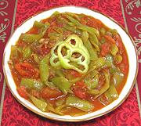

|
Lecsó - Peppers with TomatoHungary - Lecsó | ||||
| Serves: Effort: Sched: DoAhead: |
4 side ** 1 hr Yes |
Pronounced LEH-choh, this delicious preparation is a basic Hungarian recipe. It is made fresh as a side dish or light main dish, used as an ingredient in recipes. | |||
| In the home this recipe is often canned in season for use in the winter, or can be frozen. See also Variations. If you must have it vegetarian or kosher, I suggest Avocado oil in place of Bacon Fat - not at all the same, but such deprivation is your own choice. | |||||
|
1 1 6 2 2 2 1 |
# # oz oz T t t |
Hungarian Peppers (1) Tomatoes, ripe Onion Bacon, smoked (2) Bacon fat Paprika (3) Salt |
Prep: - (20 min)
|